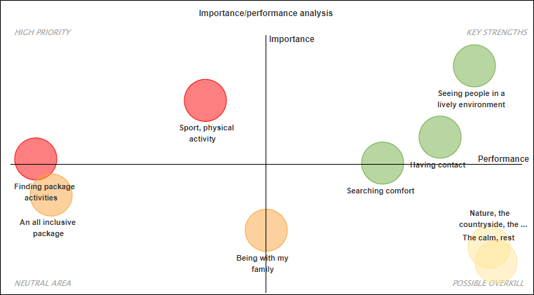
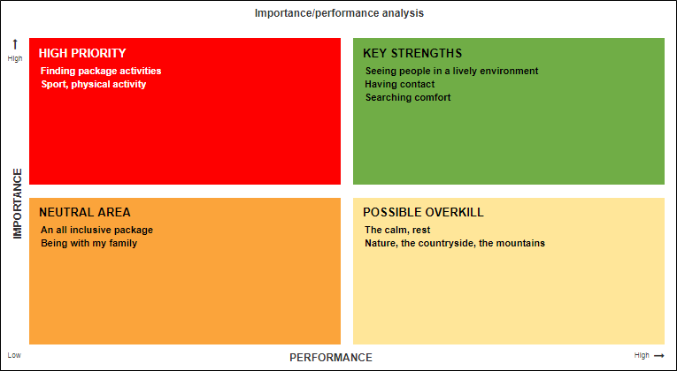
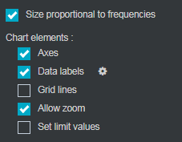

Perform an importance/performance matrix
The importance / performance matrix is used in particular for satisfaction surveys. It allows you to establish the overall satisfaction of the respondent and the importance given to certain evaluated criteria.
EXAMPLE: For example, in a tourism survey, we may want to identify among the perfect holiday criteria those that most influence the overall satisfaction.
In order to perform an importance / performance matrix, proceed as follows:
-
Click on the
 button.
button. -
Select advanced analysis.
-
Click on importance / performance analysis.
-
Select the online variables that correspond to the different criteria evaluated.
-
Select the variable with which the evaluated criteria will be correlated (usually it is the overall satisfaction).
The criteria will be presented on a matrix with two dimensions:
-
Vertical axis: the importance that is measured by the correlation coefficient of each criterion with the overall satisfaction. So the more the correlation between a criterion and the overall satisfaction is strong, the more they are linked and thus, the more the criterion is important.
-
Horizontal axis: the performance that is measured by the average satisfaction of the criterion for all respondents.
-
-
(optional) Change the axis and quadrant names if necessary.
-
Click on OK.

Once the matrix is created, it is possible to change the variables by selecting the analysis and clicking  or right clicking edit on the analysis.
or right clicking edit on the analysis.
Two types of graphs are proposed for the Importance / Performance matrix:
 Map |
 Grid |


 PRESENTATION OPTIONS AND MATRIX ANALYSIS
PRESENTATION OPTIONS AND MATRIX ANALYSIS
In the options tab, chart category, it is possible to select size proportional to frequencies. Thus, the bubbles size will be proportional to the studied variables size.
The matrix is composed of four zones:
-
Progress area (high priority): the criterion is not very well evaluated by the individuals even if it is important for them.
-
Key strengths area: the criterion is very well evaluated and important for individuals.
-
Neutral area: the criterion is not very well evaluated, but it is not very important for individuals.
-
Possible overkill area: the criterion is well evaluated by individuals, but it is not very important for them.
In the case of an importance / performance matrix, there can be many variables which makes the graph's readability difficult. You can then zoom in on certain sections to see more closely an interesting area during the preview.
To zoom, select allow zoom in the chart elements.

In the preview, place the cursor on a part of the graph, click drag and make a square around the area to be zoomed. Then it will be possible to cancel the zoom by clicking on the button  .
.